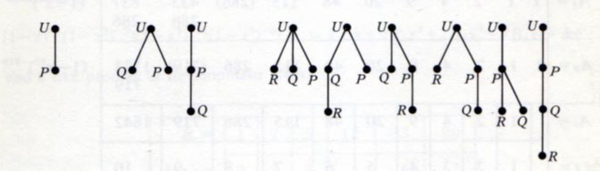

Визуализация данных
Александр Дайняк @ CSClub
12-13 ноября 2016
Визуализация с древних времён…
Генеалогическое дерево
династии Саксонов (XII век)
Дерево добродетелей (XIV век)
Дерево грехов (XIV век)
Логический квадрат
— диаграмма отношений между силлогизмами.
Juan de Celaya (1490—1558)
Иллюстрация А.-Т. Вандермонда (1771 г.) к задаче об обходе шахматной доски конём.
Иллюстрация У. Гамильтона (1857) к задаче об обходе икосаэдра.
Помеченные деревья из статьи Кэли (1857)
A. Cayley. On the Theory of the Analytical Forms Called Trees. Philosophical Magazine, 4(13):172–176, 1857.
Графы молекул из статьи А.К. Брауна (1864).
…до наших дней
- W.T. Tutte ’1963. How to draw a graph
- D.E. Knuth ’1970. How shall we draw a tree
- Шаг вниз, нарисовать правое поддерево рекурсивно.
- Шаг вверх, шаг влево, нарисовать корень
- Шаг вниз, нарисовать левое поддерево рекурсивно.
Есть и NP-трудные задачи
- Можно ли уложить заданное дерево на единичной сетке с рёбрам длины $1$?
План
- Общие вопросы
- Конкретные инструменты
- Визуализация графов и сетей
- Визуализация многомерных данных
Общие вопросы
- Зрительное восприятие
- Способы отображения количественных данных
- Лучшие практики и типичные ошибки

Д. Кнут о визуализации графов
D.E. Knuth (GD' 1996):
Graph drawing
is the best possible field I can think of:
it merges aesthetics, mathematical beauty and wonderful algorithms.
It therefore provides a harmonic balance between the left and right brain parts.

Конкретные инструменты
- Standalone tools
- Python libs
- Javascript frameworks
- Cloud-based tools
- ???